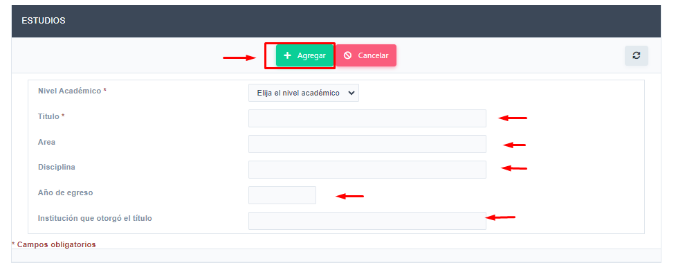
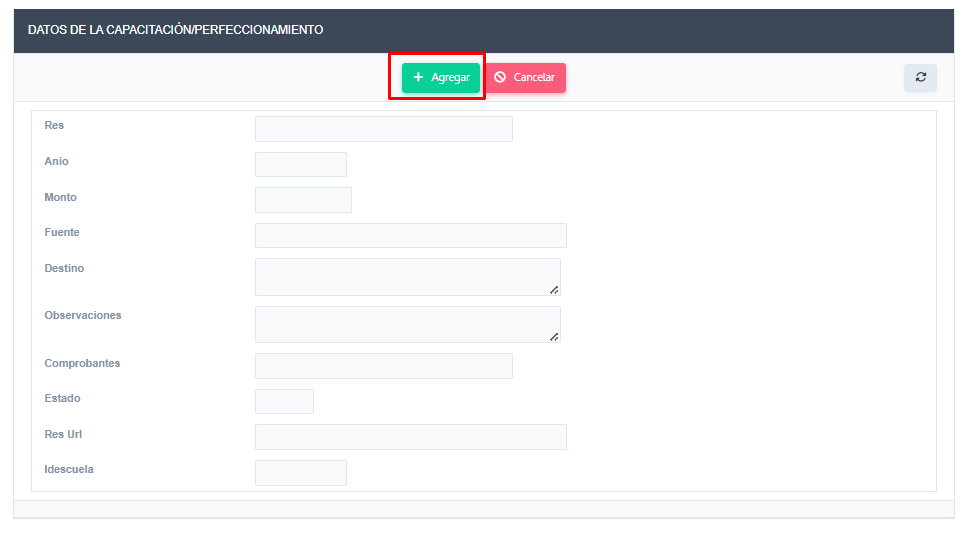

Instructivo carga de datos acreditación
Pasos para el modificacion y consulta de Formación
En el ítem de menú Formación -> Titulaciones, encontrará los datos registrados de su formación académica. En esta interfaz podrá editar los datos ya registrados haciendo clic en el botón de editar.

Empleando el botón Nuevo podrá agregar nuevos registros.
Completar los datos solicitados hacer clic en el botón Agregar para guardar el nuevo estudio.
En el ítem de menú Formación -> Capacitación, Perfeccionamiento -> Financiado por la Facultad, podrá observar los registros de capacitaciones en las que solicito ayuda económica al fondo de capacitación docente o a la escuela.

En el ítem de menú Formación -> Capacitación, Perfeccionamiento -> No Financiado por la Facultad, podrá ver y registrar nuevas capacitaciones de financiamiento propio o distintos a la facultad.

Para agregar un nuevo registro hacer clic en el botón Nuevo. Y completar los campos necesarios.
